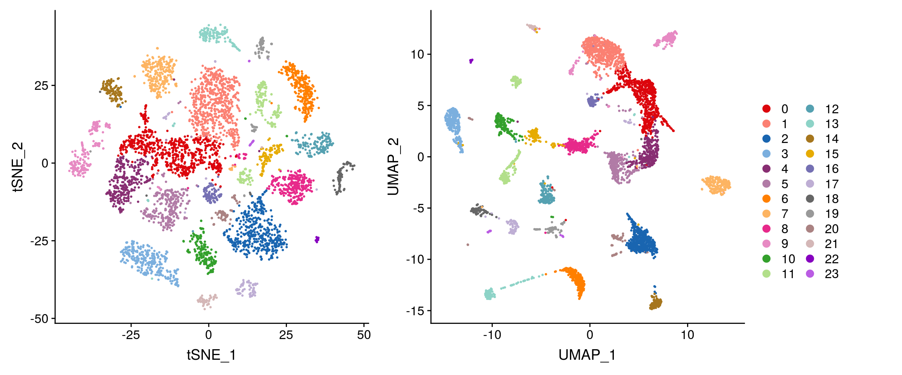
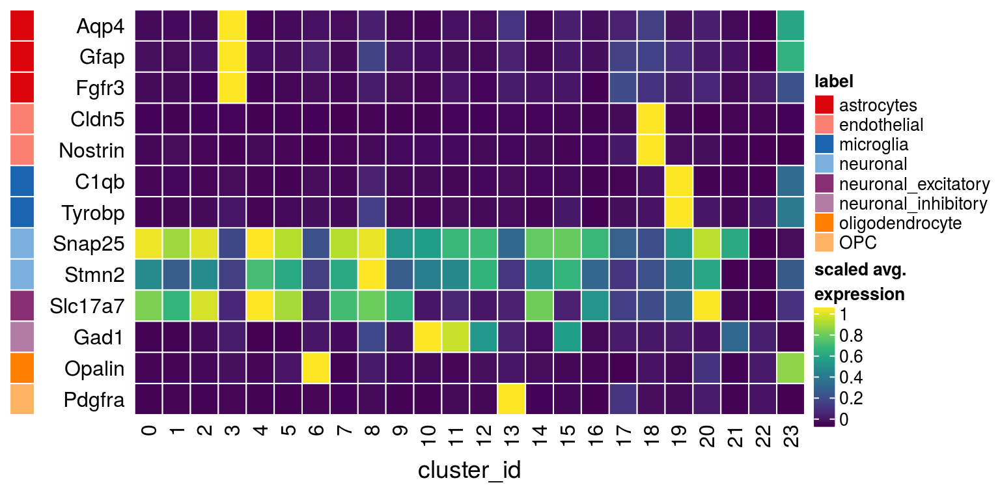
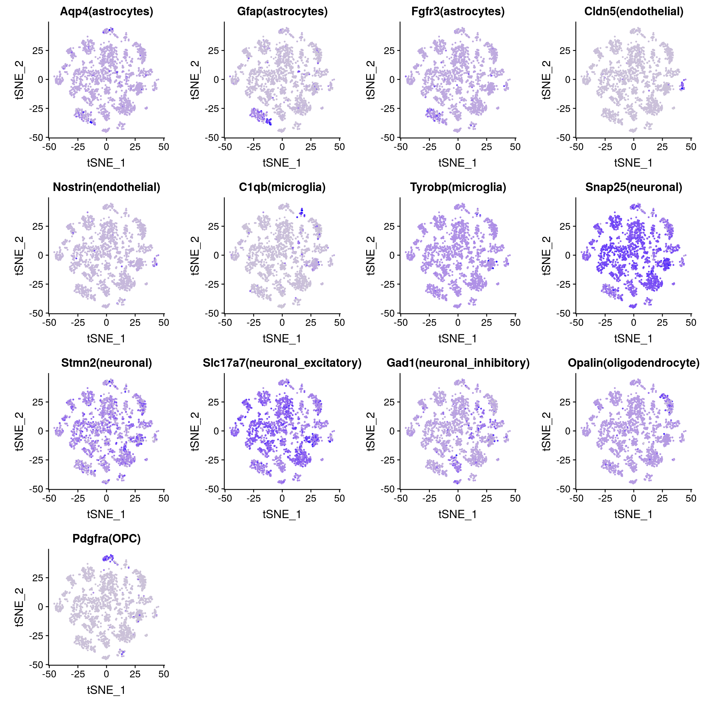
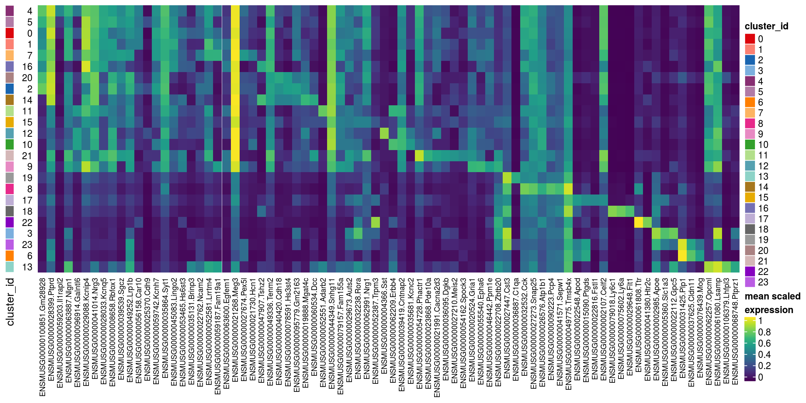

Cluster annotation
Pierre-Luc Germain
Institute for Molecular Life Sciences, University of Zurich, SwitzerlandHelena L. Crowell
Institute for Molecular Life Sciences, University of Zurich, SwitzerlandApril 27, 2019
Last updated: 2019-04-27
Checks: 5 1
Knit directory: MAGL/
This reproducible R Markdown analysis was created with workflowr (version 1.3.0). The Checks tab describes the reproducibility checks that were applied when the results were created. The Past versions tab lists the development history.
The R Markdown file has unstaged changes. To know which version of the R Markdown file created these results, you’ll want to first commit it to the Git repo. If you’re still working on the analysis, you can ignore this warning. When you’re finished, you can run wflow_publish to commit the R Markdown file and build the HTML.
Great job! The global environment was empty. Objects defined in the global environment can affect the analysis in your R Markdown file in unknown ways. For reproduciblity it’s best to always run the code in an empty environment.
The command set.seed(20190311) was run prior to running the code in the R Markdown file. Setting a seed ensures that any results that rely on randomness, e.g. subsampling or permutations, are reproducible.
Great job! Recording the operating system, R version, and package versions is critical for reproducibility.
Nice! There were no cached chunks for this analysis, so you can be confident that you successfully produced the results during this run.
Great! You are using Git for version control. Tracking code development and connecting the code version to the results is critical for reproducibility. The version displayed above was the version of the Git repository at the time these results were generated.
Note that you need to be careful to ensure that all relevant files for the analysis have been committed to Git prior to generating the results (you can use wflow_publish or wflow_git_commit). workflowr only checks the R Markdown file, but you know if there are other scripts or data files that it depends on. Below is the status of the Git repository when the results were generated:
Ignored files:
Ignored: .DS_Store
Ignored: .snakemake/
Ignored: MAGL/.DS_Store
Ignored: MAGL/.RData
Ignored: MAGL/.Rhistory
Ignored: MAGL/data/
Ignored: MAGL/output/
Ignored: config/
Ignored: data/
Ignored: figures/
Ignored: metadata/
Ignored: results/
Untracked files:
Untracked: .RData
Untracked: .Rhistory
Untracked: ._README.md
Untracked: ._Snakefile
Untracked: ._config.yaml
Untracked: MAGL/._.DS_Store
Untracked: MAGL/._.Rprofile
Untracked: MAGL/._data
Untracked: MAGL/docs/figure/1-clustering.Rmd/
Untracked: MAGL/docs/figure/2-annotation.Rmd/
Untracked: scripts/._apply_ad.R
Untracked: scripts/._apply_mm.R
Untracked: scripts/._apply_scdd.R
Untracked: scripts/._calc_conc.R
Untracked: scripts/._meth_pars.R
Untracked: scripts/._plot_conc.R
Untracked: scripts/._plot_padj_local_vs_global.R
Untracked: scripts/._plot_perf_split_by_cat.R
Untracked: scripts/._plot_perf_split_by_lfc.R
Untracked: scripts/._plot_perf_vs_ncells.R
Untracked: scripts/._plot_upsets.R
Untracked: scripts/._run_method.R
Untracked: scripts/._sim_data.R
Untracked: scripts/._sim_pars.R
Untracked: scripts/._utils.R
Untracked: scripts/plot_padj_local_vs_global.R
Untracked: scripts/plot_perf_split_by_cat.R
Untracked: scripts/plot_perf_split_by_lfc.R
Untracked: scripts/plot_sim_ex_hm.R
Untracked: scripts/plot_sim_vs_est_logFC.R
Unstaged changes:
Modified: MAGL/analysis/0-preprocessing.Rmd
Modified: MAGL/analysis/1-clustering.Rmd
Modified: MAGL/analysis/2-annotation.Rmd
Modified: Snakefile
Modified: config.yaml
Modified: scripts/apply_ad.R
Modified: scripts/apply_mast.R
Modified: scripts/apply_mm.R
Modified: scripts/apply_pb.R
Modified: scripts/apply_scdd.R
Modified: scripts/calc_conc.R
Modified: scripts/meth_pars.R
Modified: scripts/plot_conc.R
Modified: scripts/plot_null.R
Deleted: scripts/plot_padj_loc_vs_glb.R
Modified: scripts/plot_perf.R
Deleted: scripts/plot_perf_split.R
Modified: scripts/plot_perf_vs_ncells.R
Deleted: scripts/plot_perf_vs_ncells_box.R
Modified: scripts/plot_upsets.R
Modified: scripts/run_method.R
Modified: scripts/sim_data.R
Modified: scripts/sim_pars.R
Modified: scripts/utils.R
Note that any generated files, e.g. HTML, png, CSS, etc., are not included in this status report because it is ok for generated content to have uncommitted changes.
These are the previous versions of the R Markdown and HTML files. If you’ve configured a remote Git repository (see ?wflow_git_remote), click on the hyperlinks in the table below to view them.
| File | Version | Author | Date | Message |
|---|---|---|---|---|
| Rmd | eaed7ec | HelenaLC | 2019-03-11 | initial commit |
Load packages
suppressPackageStartupMessages({
library(ComplexHeatmap)
library(cowplot)
library(RColorBrewer)
library(viridis)
library(scran)
library(Seurat)
library(SingleCellExperiment)
})Load data & convert to SCE
so <- readRDS(file.path("output", "MAGL-SeuratObject.rds"))
sce <- as.SingleCellExperiment(so, assay = "RNA")Number of clusters by resolution
cluster_cols <- grep("res.[0-9]", colnames(colData(sce)), value = TRUE)
vapply(cluster_cols, function(k) nlevels(sce[[k]]), numeric(1))integrated_snn_res.0.1 integrated_snn_res.0.2 integrated_snn_res.0.4
20 24 28
integrated_snn_res.0.8 integrated_snn_res.1 integrated_snn_res.1.2
33 36 40
integrated_snn_res.2
48 Cluster-sample counts
# set cluster IDs to resolution 0.2 clustering
sce$cluster_id <- sce$integrated_snn_res.0.2
(n_cells_by_cluster_sample <- table(sce$cluster_id, sce$sample_id))
LC016 LC017 LC019 LC020 LC022 LC023 LC025 LC026
0 662 275 250 249 380 523 317 673
1 694 238 234 216 346 464 273 752
2 123 328 297 264 397 370 368 470
3 139 96 224 298 255 188 92 341
4 367 139 107 94 236 155 161 258
5 209 173 112 111 188 214 178 305
6 124 52 200 293 332 117 97 157
7 345 136 117 102 159 125 158 201
8 61 13 89 879 51 21 93 114
9 177 67 145 96 121 193 154 180
10 193 91 61 92 164 139 105 224
11 190 87 77 85 174 130 110 216
12 176 81 66 57 113 121 104 150
13 92 37 77 90 115 110 57 161
14 118 59 62 45 75 70 94 97
15 36 32 42 115 25 39 285 17
16 235 15 56 33 41 10 79 7
17 36 29 41 58 49 54 27 178
18 33 23 73 121 30 51 38 59
19 20 32 35 109 42 33 34 108
20 24 48 36 33 59 53 60 55
21 19 64 0 79 17 61 82 15
22 0 3 8 18 25 11 24 7
23 11 6 6 10 14 12 20 10Relative cluster-abundances
fqs <- prop.table(n_cells_by_cluster_sample, margin = 2)
mat <- as.matrix(unclass(fqs))
Heatmap(mat,
col = rev(brewer.pal(11, "RdGy")[-6]),
name = "Frequency",
cluster_rows = FALSE,
cluster_columns = FALSE,
row_names_side = "left",
row_title = "cluster_id",
column_title = "sample_id",
column_title_side = "bottom",
rect_gp = gpar(col = "white"),
cell_fun = function(i, j, x, y, width, height, fill)
grid.text(round(mat[j, i] * 100, 2), x = x, y = y,
gp = gpar(col = "white", fontsize = 8)))
DR colored by cluster ID
make_dr_plot <- function(so, dr)
DimPlot(so,
cells = sample(colnames(so), 5e3),
group.by = "integrated_snn_res.0.2",
reduction = dr, pt.size = 0.4) +
scale_color_manual(values = muscat:::cluster_colors) +
theme(aspect.ratio = 1)
lgd <- get_legend(p1 <- make_dr_plot(so, "tsne"))
p1 <- p1 + theme(legend.position = "none")
p2 <- make_dr_plot(so, "umap") + theme(legend.position = "none")
# arrange plots & legend
ps <- plot_grid(plotlist = list(p1, p2), nrow = 1)
plot_grid(ps, lgd, nrow = 1, rel_widths = c(1, 0.2))
Known marker genes
known_markers <- list(
astrocytes = c("Aqp4", "Gfap", "Fgfr3"),
endothelial = c("Cldn5","Nostrin"),
microglia = c("C1qb","Tyrobp"),
neuronal = c("Snap25", "Stmn2"),
neuronal_excitatory = "Slc17a7",
neuronal_inhibitory = "Gad1",
oligodendrocyte = "Opalin",
OPC = "Pdgfra")
known_markers <- lapply(known_markers, sapply, function(g)
grep(paste0(g, "$"), rownames(sce), value = TRUE))
gs <- gsub(".*\\.", "", unlist(known_markers))
ks <- rep.int(names(known_markers), vapply(known_markers, length, numeric(1)))
labs <- sprintf("%s(%s)", gs, ks)Heatmap of mean marker-exprs. by cluster
# split cells by cluster
cells_by_cluster <- split(colnames(sce), sce$cluster_id)
# compute cluster-marker means
means_by_cluster <- lapply(known_markers, function(gs)
vapply(cells_by_cluster, function(i)
Matrix::rowMeans(logcounts(sce)[gs, i, drop = FALSE]),
numeric(length(gs))))
# prep. for plotting & scale b/w 0 and 1
mat <- do.call("rbind", means_by_cluster)
mat <- muscat:::.scale(mat)
rownames(mat) <- gs
cols <- muscat:::cluster_colors[seq_along(known_markers)]
cols <- setNames(cols, names(known_markers))
row_anno <- rowAnnotation(
df = data.frame(label = ks),
col = list(label = cols),
gp = gpar(col = "white"))
hm <- Heatmap(mat,
name = "scaled avg.\nexpression",
col = viridis(10),
cluster_rows = FALSE,
cluster_columns = FALSE,
row_names_side = "left",
column_title = "cluster_id",
column_title_side = "bottom",
rect_gp = gpar(col = "white"))
row_anno + hm
DR colored by marker expr.
# downsample to 2000 cells
cs <- sample(colnames(sce), 2e3)
gs <- unlist(known_markers)
# t-SNE colored by marker-expression
ps <- FeaturePlot(so,
cells = cs, features = gs,
reduction = "tsne", combine = FALSE, pt.size = 0.4)
ps <- lapply(seq_along(ps), function(i) {
ps[[i]] <- ps[[i]] + theme(aspect.ratio = 1,
legend.position = "none") +
ggtitle(labs[i])
return(ps[[i]])
})
# arrange plots
plot_grid(plotlist = ps, ncol = 4, label_size = 10)
Find markers using scran
scran_markers <- findMarkers(sce,
clusters = sce$cluster_id, block = sce$sample_id,
direction = "up", lfc = 2, full.stats = TRUE)Heatmap of mean marker-exprs. by cluster
gs <- lapply(scran_markers, function(u) rownames(u)[u$Top == 1])
muscat::plotMarkerGenes(sce, gs)
sessionInfo()R version 3.5.1 (2018-07-02)
Platform: x86_64-pc-linux-gnu (64-bit)
Running under: Ubuntu 16.04.5 LTS
Matrix products: default
BLAS: /usr/local/R/R-3.5.1/lib/libRblas.so
LAPACK: /usr/local/R/R-3.5.1/lib/libRlapack.so
locale:
[1] LC_CTYPE=en_CA.UTF-8 LC_NUMERIC=C
[3] LC_TIME=en_CA.UTF-8 LC_COLLATE=en_CA.UTF-8
[5] LC_MONETARY=en_CA.UTF-8 LC_MESSAGES=en_CA.UTF-8
[7] LC_PAPER=en_CA.UTF-8 LC_NAME=C
[9] LC_ADDRESS=C LC_TELEPHONE=C
[11] LC_MEASUREMENT=en_CA.UTF-8 LC_IDENTIFICATION=C
attached base packages:
[1] parallel stats4 grid stats graphics grDevices utils
[8] datasets methods base
other attached packages:
[1] Seurat_3.0.0 scran_1.10.2
[3] SingleCellExperiment_1.4.1 SummarizedExperiment_1.12.0
[5] DelayedArray_0.8.0 matrixStats_0.54.0
[7] Biobase_2.42.0 GenomicRanges_1.34.0
[9] GenomeInfoDb_1.18.2 IRanges_2.16.0
[11] S4Vectors_0.20.1 BiocGenerics_0.28.0
[13] BiocParallel_1.16.6 viridis_0.5.1
[15] viridisLite_0.3.0 RColorBrewer_1.1-2
[17] cowplot_0.9.4 ggplot2_3.1.1
[19] ComplexHeatmap_1.20.0
loaded via a namespace (and not attached):
[1] reticulate_1.12 R.utils_2.8.0
[3] tidyselect_0.2.5 lme4_1.1-21
[5] RSQLite_2.1.1 AnnotationDbi_1.44.0
[7] htmlwidgets_1.3 Rtsne_0.15
[9] munsell_0.5.0 codetools_0.2-16
[11] ica_1.0-2 statmod_1.4.30
[13] future_1.12.0 withr_2.1.2
[15] colorspace_1.4-1 knitr_1.22
[17] rstudioapi_0.10 ROCR_1.0-7
[19] gbRd_0.4-11 listenv_0.7.0
[21] labeling_0.3 Rdpack_0.11-0
[23] git2r_0.25.2 muscat_0.99.8
[25] GenomeInfoDbData_1.2.0 bit64_0.9-7
[27] rhdf5_2.26.2 rprojroot_1.3-2
[29] xfun_0.6 doParallel_1.0.14
[31] R6_2.4.0 ggbeeswarm_0.6.0
[33] rsvd_1.0.0 locfit_1.5-9.1
[35] bitops_1.0-6 assertthat_0.2.1
[37] SDMTools_1.1-221.1 scales_1.0.0
[39] nnet_7.3-12 beeswarm_0.2.3
[41] gtable_0.3.0 npsurv_0.4-0
[43] globals_0.12.4 workflowr_1.3.0
[45] rlang_0.3.4 genefilter_1.64.0
[47] GlobalOptions_0.1.0 splines_3.5.1
[49] lazyeval_0.2.2 acepack_1.4.1
[51] checkmate_1.9.1 yaml_2.2.0
[53] reshape2_1.4.3 backports_1.1.4
[55] Hmisc_4.2-0 tools_3.5.1
[57] gplots_3.0.1.1 dynamicTreeCut_1.63-1
[59] ggridges_0.5.1 Rcpp_1.0.1
[61] plyr_1.8.4 progress_1.2.0
[63] base64enc_0.1-3 zlibbioc_1.28.0
[65] purrr_0.3.2 RCurl_1.95-4.12
[67] prettyunits_1.0.2 rpart_4.1-15
[69] pbapply_1.4-0 GetoptLong_0.1.7
[71] zoo_1.8-5 ggrepel_0.8.0
[73] cluster_2.0.8 colorRamps_2.3
[75] fs_1.2.7 variancePartition_1.12.3
[77] magrittr_1.5 data.table_1.12.2
[79] lmerTest_3.1-0 circlize_0.4.6
[81] lmtest_0.9-36 RANN_2.6.1
[83] whisker_0.3-2 fitdistrplus_1.0-14
[85] hms_0.4.2 lsei_1.2-0
[87] evaluate_0.13 xtable_1.8-4
[89] pbkrtest_0.4-7 XML_3.98-1.19
[91] gridExtra_2.3 shape_1.4.4
[93] compiler_3.5.1 scater_1.10.1
[95] tibble_2.1.1 KernSmooth_2.23-15
[97] crayon_1.3.4 minqa_1.2.4
[99] R.oo_1.22.0 htmltools_0.3.6
[101] Formula_1.2-3 tidyr_0.8.3
[103] geneplotter_1.60.0 DBI_1.0.0
[105] MASS_7.3-51.3 boot_1.3-20
[107] Matrix_1.2-17 R.methodsS3_1.7.1
[109] gdata_2.18.0 metap_1.1
[111] igraph_1.2.4.1 pkgconfig_2.0.2
[113] numDeriv_2016.8-1 foreign_0.8-71
[115] plotly_4.9.0 foreach_1.4.4
[117] annotate_1.60.1 vipor_0.4.5
[119] blme_1.0-4 XVector_0.22.0
[121] bibtex_0.4.2 stringr_1.4.0
[123] digest_0.6.18 sctransform_0.2.0
[125] tsne_0.1-3 rmarkdown_1.12
[127] htmlTable_1.13.1 edgeR_3.24.3
[129] DelayedMatrixStats_1.4.0 gtools_3.8.1
[131] rjson_0.2.20 nloptr_1.2.1
[133] nlme_3.1-139 jsonlite_1.6
[135] Rhdf5lib_1.4.3 BiocNeighbors_1.0.0
[137] limma_3.38.3 pillar_1.3.1
[139] lattice_0.20-38 httr_1.4.0
[141] survival_2.44-1.1 glue_1.3.1
[143] iterators_1.0.10 png_0.1-7
[145] bit_1.1-14 stringi_1.4.3
[147] HDF5Array_1.10.1 blob_1.1.1
[149] DESeq2_1.22.2 latticeExtra_0.6-28
[151] caTools_1.17.1.2 memoise_1.1.0
[153] dplyr_0.8.0.1 irlba_2.3.3
[155] future.apply_1.2.0 ape_5.3